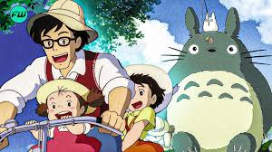

Pelicula
Mi vecino Totoro (Tonari no Totoro) es una película de animación japonesa estrenada en 1988, escrita y dirigida por Hayao Miyazaki y producida por Studio Ghibli. Esta obra se ha convertido en un ícono de la animación mundial, no solo por su entrañable historia, sino por la belleza de sus paisajes, su emotiva narrativa y la calidez de sus personajes.
El inicio de una nueva aventura
La historia comienza cuando el profesor universitario Tatsuo Kusakabe y sus dos hijas, Satsuki y Mei, se mudan a una casa de campo en Japón, a mediados de la década de 1950. Esta mudanza se debe a que su madre, Yasuko, se encuentra en recuperación en un hospital cercano, por lo que deciden instalarse en una zona más rural para estar más cerca de ella.Desde el primer momento, las niñas quedan maravilladas con la vieja casa en la que ahora vivirán. La casa es grande, con un diseño antiguo y un amplio jardín, rodeada de un entorno natural lleno de árboles, ríos y montañas. Sin embargo, al explorar su nuevo hogar, descubren la presencia de pequeñas criaturas llamadas susuwatari o "duendes de hollín", unos diminutos espíritus del polvo que habitan en casas viejas y deshabitadas. Aunque al principio las asustan, pronto aprenden que no son peligrosos.
Satsuki, la mayor, tiene alrededor de 10 años y es responsable y madura para su edad. Mei, su hermana menor de unos 4 años, es curiosa, juguetona y siempre está explorando. Ambas tienen una relación muy cercana y disfrutan de cada rincón de su nuevo hogar.

El descubrimiento de Totoro
Un día, mientras juega en el jardín, Mei ve a unas pequeñas criaturas blancas y azules con aspecto extraño. Intrigada, decide seguirlas y termina adentrándose en un enorme árbol de alcanfor cercano a su casa. Dentro del árbol, se encuentra con una criatura gigantesca de pelaje gris y blanco, enormes ojos redondos, orejas puntiagudas y una gran barriga esponjosa. Es Totoro, un espíritu del bosque.Sin miedo, Mei se acerca y se sube sobre su vientre, donde se queda dormida. Cuando Satsuki y su padre la encuentran más tarde, Mei intenta contarles sobre su descubrimiento, pero no logran ver a Totoro, lo que hace que Tatsuo le explique que probablemente haya tenido un encuentro con un espíritu del bosque, y que eso es algo maravilloso.
Más adelante, Satsuki también conoce a Totoro durante una noche de lluvia. Mientras espera a su padre en la parada del autobús, se encuentra con Mei dormida y cubierta con un impermeable. De repente, Totoro aparece a su lado, sosteniendo una pequeña hoja sobre su cabeza como si fuera un paraguas. Al notar que está empapado, Satsuki le ofrece su paraguas. Totoro, sorprendido y encantado con el sonido de las gotas de lluvia golpeando la tela, se emociona y salta, haciendo temblar el suelo. Luego, como muestra de gratitud, Totoro le entrega un regalo: una bolsa llena de semillas y nueces. En ese momento, llega el Gatobús, una criatura mágica con forma de un enorme gato que funciona como un transporte místico. Totoro sube en él y desaparece en la oscuridad de la noche.

La magia de Totoro
Días después, Satsuki y Mei plantan las semillas que Totoro les regaló, pero estas tardan en crecer. Una noche, las niñas ven a Totoro y a los pequeños espíritus del bosque realizar un ritual mágico alrededor del lugar donde plantaron las semillas. Al unirse a ellos, presencian cómo, de repente, los brotes empiezan a crecer hasta convertirse en un enorme árbol gigante que se eleva hacia el cielo. Para celebrar este momento, Totoro los lleva a un paseo por los aires en su trompo volador. Al despertar al día siguiente, las niñas descubren que el árbol ya no es gigantesco, pero las semillas han germinado, confirmando que lo que vivieron no fue un sueño, sino un momento de magia pura.La desaparición de Mei y la ayuda de Totoro
Un giro en la historia ocurre cuando la salud de la madre de Satsuki y Mei parece empeorar. Preocupada, Mei decide ir sola al hospital para llevarle una mazorca de maíz que encontró en el campo, creyendo que eso la ayudará a sanar. Sin embargo, se pierde en el camino.Cuando Satsuki y los vecinos se dan cuenta de su desaparición, inician una búsqueda desesperada. Al no encontrarla, Satsuki, angustiada, corre al bosque en busca de Totoro. Confiando en su poder, le pide ayuda, y Totoro, sin dudarlo, convoca al Gatobús. Este transporte mágico, que solo puede ser visto por aquellos con un corazón puro, lleva a Satsuki hasta donde está Mei.
Al encontrarla sana y salva, las hermanas se abrazan con emoción. Luego, el Gatobús las lleva al hospital donde está su madre. Desde una rama alta, las niñas observan la ventana de la habitación de Yasuko y la ven sonreír, lo que las llena de alivio. Antes de irse, dejan la mazorca con un mensaje grabado: "Para mamá".
Después de este episodio, las niñas regresan a casa, sintiéndose más felices y tranquilas. Aunque su relación con Totoro y las criaturas del bosque sigue siendo un secreto para los adultos, saben que él siempre estará con ellas.